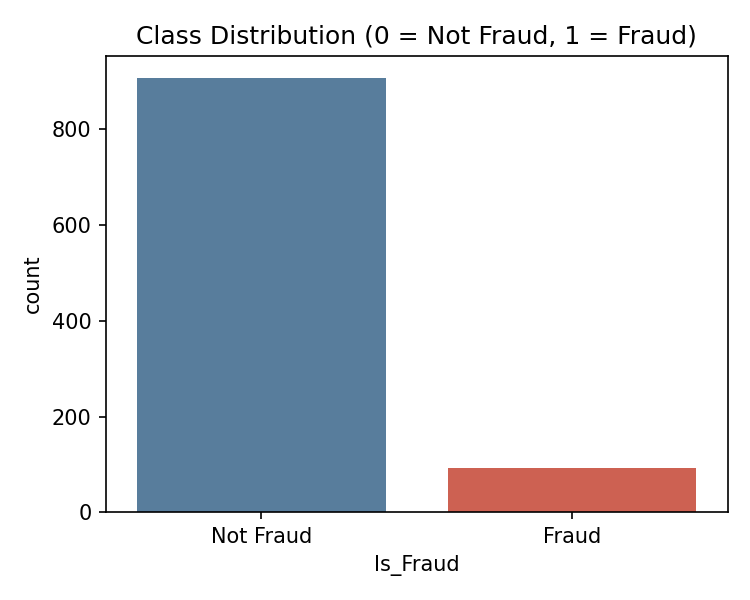
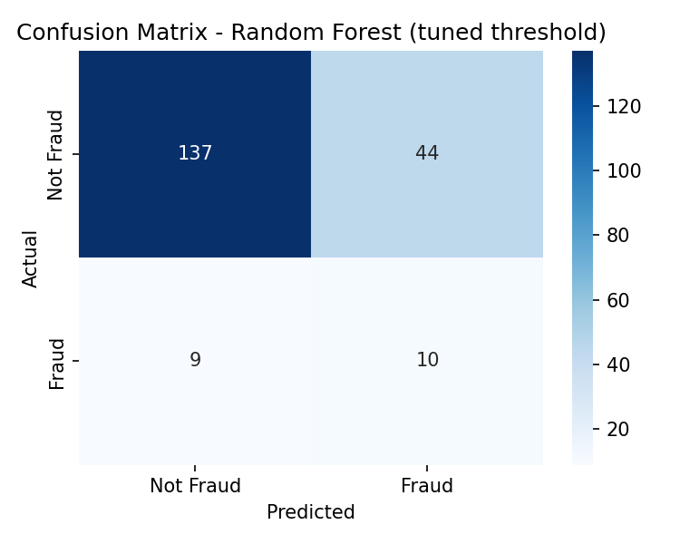
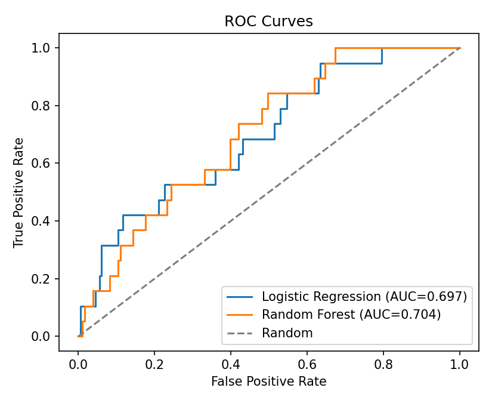
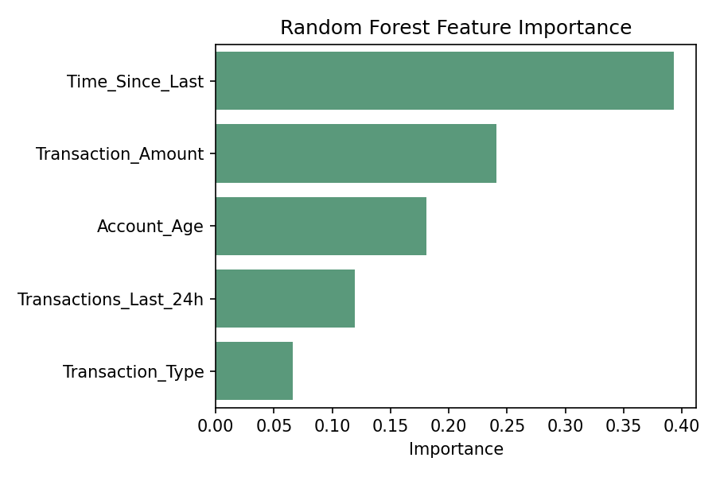

Finding 93 frauds
in 1,000 transactions.
A full pipeline for detecting credit card fraud in a dataset where fraud makes up under 10% of records — the exact imbalance problem every real fraud system has to solve. Built with SMOTE, Random Forest, and a recall-tuned decision threshold.
Fraud is rare, expensive, and getting harder to catch with fixed rules.
Industry reports put annual losses from credit card fraud in the billions of dollars, and most of it goes unnoticed until real damage is done. Three things make it a hard machine learning problem, not just a hard business problem.
Class imbalance
Fraud is the minority class by a wide margin. A model that predicts "not fraud" every time still looks 90%+ accurate — and is completely useless.
Real-time constraints
Detection has to happen before a transaction clears, not in a batch job the next morning. Every extra millisecond has a cost at scale.
Evolving tactics
Fixed if/then rules age out fast. Fraud patterns shift as soon as attackers learn what gets flagged, which is what makes this a learning problem.
1,000 transactions. 5 features. 1 target.
A deliberately lean feature set — no device fingerprint, no geolocation, no user history. That constraint is part of the story; see Limitations.
Seven steps, in order.
Each step depends on the one before it — SMOTE runs only after the split, so synthetic points never leak into the test set.
Data cleaning
Check for nulls, verify dtypes, enforce consistency across every column before anything touches a model.
Train/test split
80 / 20 stratified split, done before any resampling — the 200-row test set stays untouched and realistically imbalanced.
Feature scaling
StandardScaler fit on the training set's Transaction_Amount, then applied to both sets — so no single feature dominates on magnitude alone.
SMOTE oversampling
Synthetic Minority Oversampling generates new, realistic fraud examples between real ones and their nearest neighbors — training-set only.
Model training
Logistic Regression as a linear baseline, Random Forest as the primary model, both trained on the SMOTE-balanced data.
Threshold tuning
Sweep the decision threshold and pick the one that maximizes F1 while pushing recall up — a missed fraud costs more than a false alarm.
Evaluation
Accuracy, precision, recall, F1, and ROC-AUC on the untouched test set — never accuracy alone on an imbalanced problem.
Why Random Forest, and not the others.
Five candidates, one job: handle a small, nonlinear, tabular dataset without overfitting or needing heavy tuning.
| Model | Strengths | Why not here |
|---|---|---|
| Logistic Regression | FastInterpretable | Assumes linear relationships — struggles with the nonlinear patterns fraud tends to show. |
| K-Nearest Neighbors | Simple | Computes distance to every point at inference time; sensitive to outliers and noise. |
| SVM | Complex boundaries | Slow to train and memory-intensive as the dataset grows. |
| Decision Tree | FastInterpretable | Prone to overfitting; unstable — small data changes reshape the whole tree. |
| Random Forest ✓ | RobustFeature importanceLow tuning | Selected — an ensemble of trees solves the single-tree instability problem directly. |
| Neural Network | Powerful at scale | Needs far more data and tuning than 1,000 rows can support; hard to interpret; overkill for tabular data this size. |
Threshold tuning nearly doubles fraud recall.
Lowering the Random Forest's decision threshold from 0.5 to 0.38 trades some overall accuracy for catching far more real fraud — the right trade when a false alarm is an inconvenience and a missed fraud is a loss.




Score a transaction yourself.
This runs the project's real trained Logistic Regression weights — entirely in your browser, nothing sent anywhere. The repository's primary model is the threshold-tuned Random Forest shown above; this is a lightweight, portable version of the same detector for you to poke at.
Where this system would fall over in production.
Imbalanced, synthetic-augmented data
Even after SMOTE, synthetic fraud examples don't perfectly reflect real-world fraud behavior.
Limited features
No device ID, user history, or location data — the metadata real fraud systems lean on most.
Black-box predictions
Random Forest is accurate but doesn't explain individual decisions on its own.
Static learning
Trained once on historical data — it won't adapt automatically as fraud tactics change.
What comes next.
Real-time scoring
Move from batch evaluation to streaming inference on live transactions.
Richer features
Device fingerprint, geo-location, and login history for a real accuracy jump.
Explainability
SHAP or LIME to explain individual predictions and build reviewer trust.
Continuous learning
An online-learning loop that updates as new transaction data arrives.